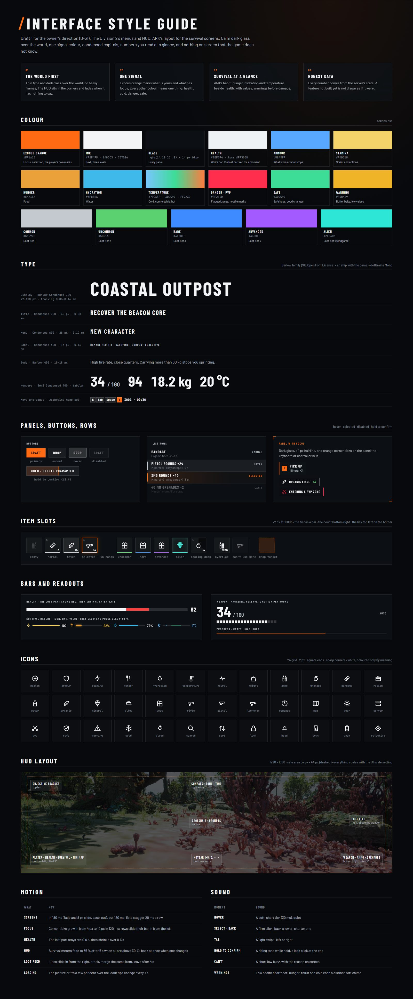
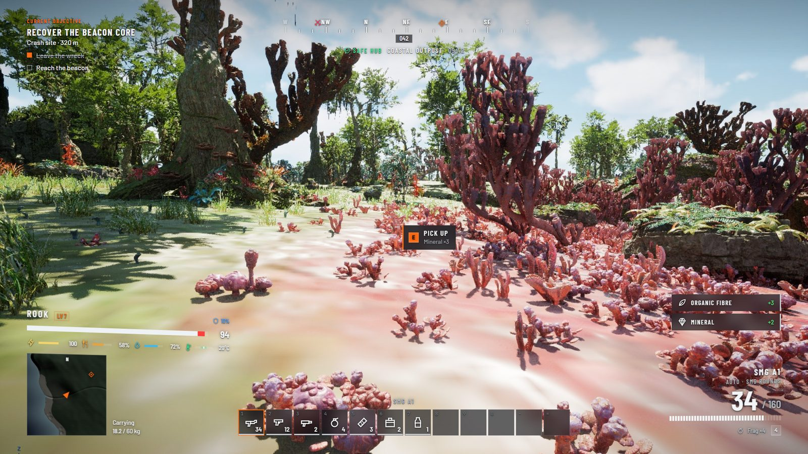
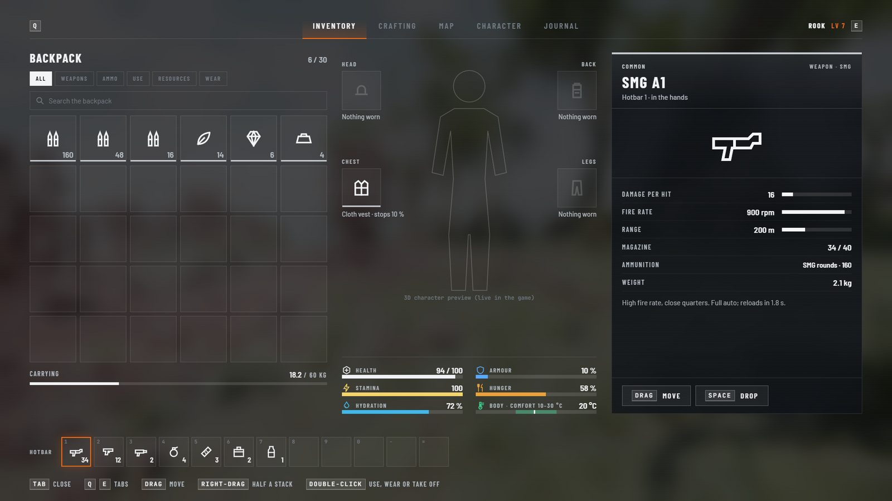
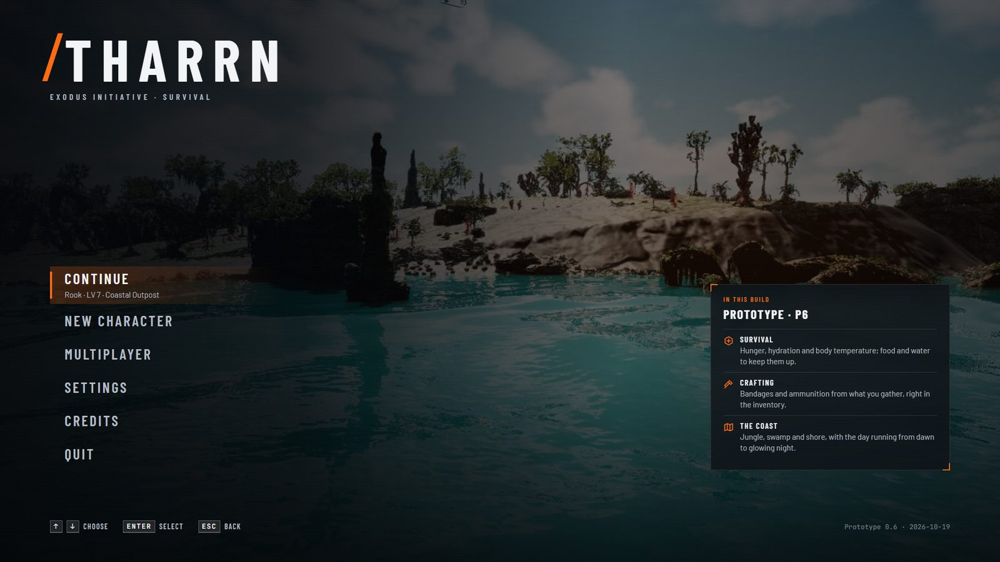
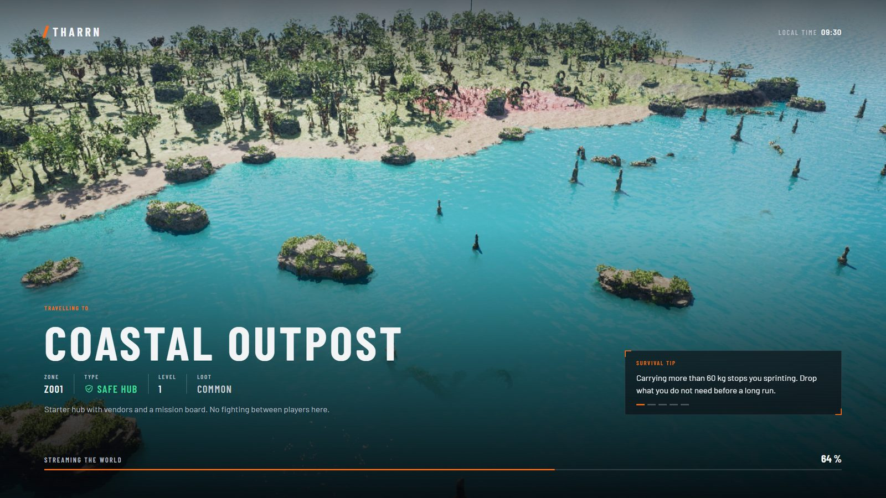
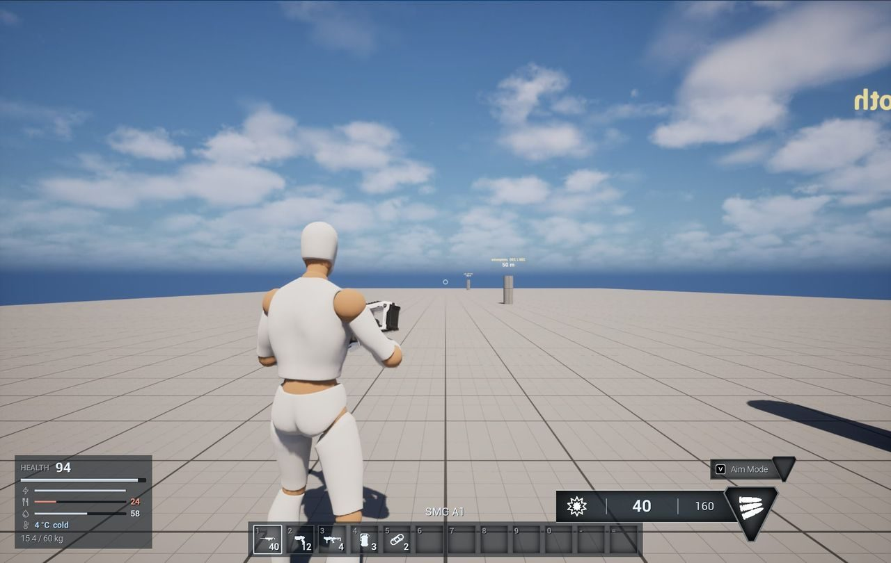
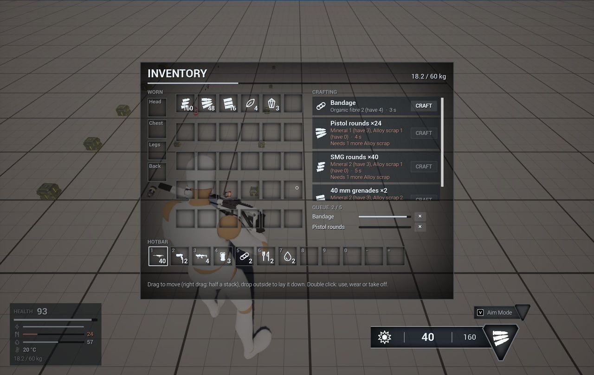
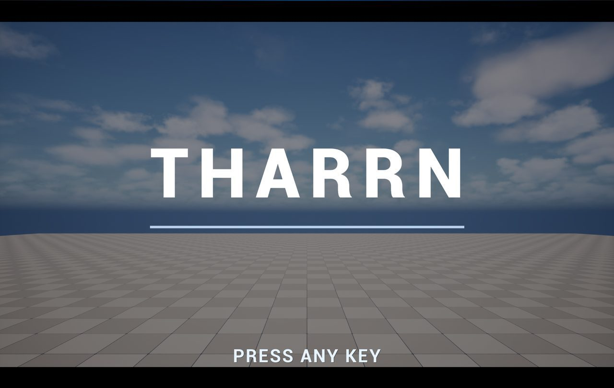

GUI, UI, Menus
Designing and building Tharrn's interface to AAA quality: the HUD, the menus, the survival screens, the loading screen.
Doing This tab is the interface's workshop: the HUD, the menus, the survival screens and the loading screen, designed and built to AAA quality, with pictures as each step lands. The direction is the owner's (D-31): The Division 2's menus and HUD, with ARK's layout for the survival parts. Mock-ups are drawn over real captures from the game, with the game's real items and values.
Latest pictures










Steps
| Step | What | State |
|---|---|---|
| U1 | Style guide: colour, type, panels, buttons, rows, item slots, bars, icons, HUD layout, motion, sound | draft 1, 2026-10-19, for the owner's review |
| U2 | Mock-ups of the main screens over in-game captures: HUD, inventory, main menu, loading screen | draft 1, 2026-10-19 |
| U3 | Shared parts in the engine: the tokens as UMG styles, Barlow imported, the icon set, buttons, rows, slots, bars, prompts and toasts as C++ widget classes with Blueprint looks | Designed |
| U4 | Main menu (with a live 3D scene behind) and loading screen | Designed |
| U5 | HUD rebuilt in the new style | Designed |
| U6 | Inventory and crafting in ARK's layout | Designed |
| U7 | Pause menu, options (Easy Game UI, D-21), death and respawn, starting-location picker (D-28) | Designed |
| U8 | Map, journal, character creation | Designed |
Direction
- The Division 2's menus and HUD:** calm dark glass over the world, one signal colour, condensed capitals, numbers you read at a glance; the HUD in the corners, tilted a little as if it floats beside the player, fading when it has nothing to say; full-screen menus with tabs across the top (Q and E) and a card for the selected thing.
- ARK's layout for the survival parts:** the inventory with the backpack left, the character and what is worn in the middle with the survival stats, the other side (an item, a container, a crafting station) right; hunger, hydration and temperature beside health with their values.
- Honest data:** every number comes from the game's real state and data; a feature not built yet is labelled, not drawn as if it were.
- e style is Tharrn's own (Exodus orange, Barlow type, its own icons), not copied art; Barlow is under the SIL Open Font License, so it can ship with the game.
Sources:
docs/ui/holds the style guide's tokens and parts (tokens.css,icons.js), the mock-ups (*.html, drawn over in-game captures indocs/ui/backdrops/) andrender.mjs, which turns them into pictures inpictures/ui/(node projects/Tharrn/docs/ui/render.mjs).
In the game today
In the build What the build has now, before the new style: Tharrn's C++ widgets for the HUD (health, survival meters, the twelve-slot hotbar, the weapon, prompts), the inventory screen with crafting, and the death screen (P4, P5); the main menu, pause menu and options from Easy Game UI Ultimate (D-21). Each is rebuilt in the new style (steps U3 to U7).






HUD icons (P4 set)
Designed The placeholder icons the build uses now, white on a clear background so the HUD can tint them, shown here on a dark tile. The style guide redraws them crisper (square ends, sharp corners). Select one to see it full size; the PNG link under each is the transparent file the game uses.


Screens to come
- Map: layers for PvP zones, resource nodes and dungeon entrances; several zoom levels.
- Journal: objectives, stages, lore entries and map markers.
- Starting location: pick where to start, one or two places in each region by difficulty (D-28).
- Accessibility: UI scale, colour-blind modes, subtitle sizes, controller remapping; offered at first launch.
Characters
Designed Every face is a MetaHuman; character creation is a screen of its own (step U8).
PresetFaceBodyImplants and scarsVoiceOriginLoadoutConfirm
| Step | Choices |
|---|---|
| Preset | 12 curated MetaHumans with a balanced range of looks |
| Face | Sliders for jaw, brow, nose, cheeks and lips; iris colour, sclera tint, small scars; live preview with breathing and eye movement |
| Body | Height within ±15 %, musculature, limb length, posture |
| Implants and scars | Alien biotech: glowing nodes, plates under the skin; tattoos |
| Voice | 8 voice packs with lip sync; pitch |
| Origin | Scientist, Soldier, Scavenger or Corporate Envoy: a starting talent point, a starter item and a three-step intro quest |
| Loadout | A weapon type and a survival tool |
Open question The direction asks for 120 face sliders while you play. MetaHuman creation is an editor tool, so the prototype starts with the presets plus body, materials, tattoos and implants; changing faces in the game is its own research step (OQ-03).
The first preset
| Name | Ari Voss |
| Origin | Soldier |
| Height | 1.82 m |
| Implant | imp_neural_node_01, colour #00FFCC, glow 0.6 |
| Starter weapon | AR01 |
| Starter tool | field_scanner |
| Notes | Balanced soldier preset with slight jaw and high cheekbones. |